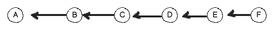
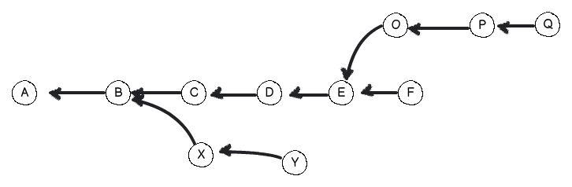
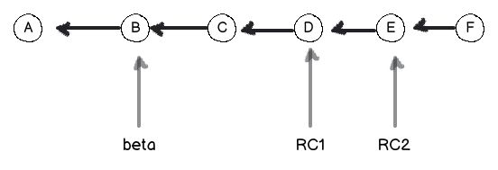
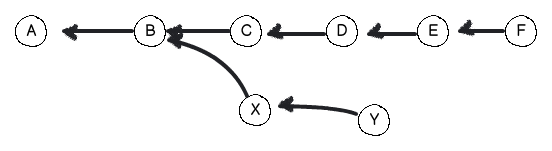
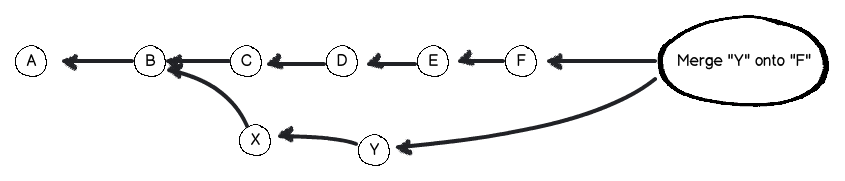

The Goal
Feeling your way around this lot:
$ git init; find .git
.git
.git/branches
.git/refs
.git/refs/heads
.git/refs/tags
.git/hooks
.git/hooks/post-commit.sample
<snip>
.git/hooks/pre-applypatch.sample
.git/HEAD
.git/info
.git/info/exclude
.git/description
.git/objects
.git/objects/info
.git/objects/pack
.git/config
What is git for?
File Snapshots & History
The entire history of all the files in the repo
Need to store them somehow
Git Object Database
Key/Value store
Value can be anything
Key is a SHA-1 digest
Immutable objects
Changing a value means storing it separately
under a different key.
Git's trinity
- Blob
- Tree
- Commit
What's a Blob?
file contents
no metadata
stored as is
Blob exposed
$ git cat-file blob 858e207b3ea2e44f37eb6b85653a780ec777ad67
package main
import "fmt"
func main() {
fmt.Println("Hello, World")
}
What's a Tree?
a directory
contains trees and blobs
keeps metadata
- filenames
- file mode bits
- path and directory structure
Tree exposed
$ git ls-tree d6eaef3888c13602a89a5c59c88007819af10f98
100644 blob 71694f9d8b8a3874cb9afea9afab hello.go
040000 tree 27a2ef8d582b6fafa5163251898e lib
100644 blob ae368b0135b0d26cf6c976909b58 COPYING
100644 blob ee3e239aca529f82eed2fbae8b08 db.go
Renaming a file
doesn't
change the blob
does
create a new tree
What's a Commit?
repository snapshot in time
has one Tree
one or more parents
metadata
- author's name & email
- commit message
- timestamp
- ...
Commit exposed
$ git cat-file commit fa29...efae368b0135b0d26cf6c976909b58
tree d6eaef3888c13602a89a5c59c88007819af10f98
parent 4593afa00bb4cb52eb289f72788a1879231947d6
author Tomas Sedovic <tomas@sedovic.cz> 1324171835 +0100
committer Tomas Sedovic <tomas@sedovic.cz> 1324171835 +0100
Add "hello world" in Go
Keeping track of history
Every commit keeps track of its parent
Commits all the way down!
"Show me a commit,
and I'll show you its history."
Commits

Branches, too!

Nota bene
You can see commit's past but not its future
Branch must keep track of the latest commit
It's possible to have "orphans"
No harm but they waste space
Garbage collection
Everything Is A Commit
Branches are commits
Branches

Branch is just a named pointer to a commit
Always points to the latest change
Must be updated when a new commit is added
Just a named commit
$ cat .git/refs/heads/master
d846a66e6c8b6b301954bc4a9821698908805192
$ cat .git/refs/heads/new-ui
466f179482db268ee8ddea0610560041721855bb
$ cat .git/refs/heads/stable
c83126effb209dbf492f01589005ecd77e4deaa8
What does it mean?
Whenever you use a branch,
you can use a commit hash instead,
and vice versa.
checkout
$ git checkout master
$ git checkout d846a66e6c8b6b301954bc4a9821698908805192
$ git checkout HEAD^^^
interactive rebase
$ git rebase -i master
$ git rebase -i d846a66e6c8b6b301954bc4a9821698908805192
$ git rebase -i HEAD^^^
Tags are commits

Tag is a name for a particular commit
Stored just like branches
$ cat .git/refs/tags/beta
3666273ea7a53885a2bb6403393d9564cfea6424
$ cat .git/refs/tags/rc1
5cdd7d048afbb4c44b378e142c990907d460a9d7
$ cat .git/refs/tags/rc2
f6dd12d6398e57a84ba993f3f2900ee0636963f3
Tags vs. Branches
Tags never change
Branches move forward
Merging branches
Branches exist to be merged back in,
or die.
git-merge
Joins two branches together
Merging creates a new commit
Merge Commit
Has two parents
Determines the commit order
Resolves conflicts
Merging 2 branches

Merge Commit

Single timeline

Rebasing
"Merging without the bloody merge commit"
Different semantics
$ git checkout feature
$ git rebase master
Moves the rebased branch on top of the base branch
Rebase Y onto F
Y is on top of F

They're still separate branches
Fast-forward Merging
Merging a rebased branch, means no merge commit.
Creates Merge Commit
$ git checkout master
$ git merge feature
No Merge Commit
$ git checkout feature
$ git rebase master
$ git checkout master
$ git merge feature
Rebase caveats
It changes history
Push rejects history changes
Use rebase only locally
Once you've pushed the branch,
you really should use merge.
git push --force
works but it's evil
Slap in the face to everyone who pulls the changed history.
Remote repositories
Git is decentralised
Synchronise with any number of repos
No topology constraints
git-fetch
Updates all your commits from the remote repository
Doesn't change any local branches
Completely safe
git-pull
git-fetch followed by git-merge
First, gets the remote commits
Then, updates your current branch
Must be run on a clean repo
May cause conflicts
May create merge commits
git-push
Reverse of pull
Sends the local commits to the remote repo
Updates the commits and references
May be rejected
References
Git can be operated using commit hashes only
The Web can be operated using IP addresses only, too.
Refs are git's DNS
Located in .git/refs/
Branch references
$ ls .git/refs/heads/
master
admin_ui
review
bz-3482938
Tag references
$ ls .git/refs/tags/
v0.7.0_RC1
v0.7.0_RC2
v0.7.0_RC4
v0.7.0_RC3
Remotes
Reference remote branches
.git/refs/remotes/
Every remote repo has its own subdirectory
$ ls .git/refs/remotes/
origin
github
private
Refs contain only commit hashes
$ cat .git/refs/remotes/github/master
77014ab62efd1cfcc5c6d9e077c90dae8e7798c9
Where's the repo URI?
config
$ cat .git/config
...
[remote "origin"]
fetch = +refs/heads/*:refs/remotes/origin/*
url = git@github.com:aeolusproject/conductor.git
[remote "private"]
url = ssh://myprivaterepo.org/conductor.git
fetch = +refs/heads/*:refs/remotes/private/*
...
Local remotes
$ cat .git/config
...
[remote "origin"]
url = /var/backup/tsedovic/myrepo.git
fetch = +refs/heads/*:refs/remotes/origin/*
...
Name collisions
Use the full ref
git checkout refs/heads/release
vs.
git checkout refs/tags/release
vs.
git checkout refs/remotes/origin/release
Back to objects
Object database
$ ls .git/objects
.git/objects/d6/eaef3888c13602a89a5c59c88007819af10f98
.git/objects/85/8e207b3ea2e44f37eb6b85653a780ec777ad67
.git/objects/09/ddc1a30c7971694f9d8b8a3874cb9afea9afab
.git/objects/02/69872c9a2fb852656260cc84d6a1ffc2ef4497
.git/objects/e7/c3efffa012f7e73d544616dda2766be19145a1
.git/objects/b2/07a523255627a2ef8d582b6fafa5163251898e
.git/objects/0c/079e5f2e1b8b1179203dfd994f4dc5489d61f5
.git/objects/2f/b5341ee744f821104bb32d4b2aacbdff66494c
.git/objects/fa/2925fc37efae368b0135b0d26cf6c976909b58
.git/objects/45/93afa00bb4cb52eb289f72788a1879231947d6
.git/objects/de/19ac038179f28797ec8264e5721ee3528fe1c8
...
Every object stored under its own hash
Blobs, Trees, Commits
Compressed contents + type and size
Inspecting objects
git cat-file type hash
$ git cat-file blob 858e207b3ea2e44f37eb6b85653a780ec777ad67
package main
import "fmt"
func main() {
fmt.Println("Hello, World")
}
That's all
Still don't have enough?
- man git
- http://book.git-scm.com/index.html
- http://newartisans.com/2008/04/git-from-the-bottom-up/